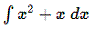
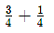
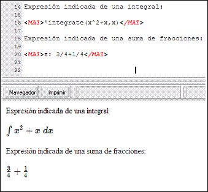

Uso:
<MAT> Expresión simple en lenguaje Maxima </MAT>
<MAT> Variable: Expresión en lenguaje Maxima </MAT>
No hay diferencias de uso con respecto a <EVAL>, las diferencias se aprecian en el resultado que producen.
Ejemplos:
<MAT>integrate(x^2+x,x) </MAT> devuelve como resultado visible

En una expresión <MAT>, la integral no se evalúa.
<MAT>z: 3/4+1/4</MAT> devuelve como resultado visible

Se asigna la expresión sin evaluar a la variable z. No se calcula la suma. Se muestra indicada.

Atajo: CONTROL + M
Información adicional: Al igual que en <EVAL> sólo es posible incluir una expresión Maxima simple.
En ocasiones, se necesita mostrar una expresión algebraica, evaluando exclusivamente algunas partes de la misma. Para lograr esto, basta con utilizar la función ev cada una de las subexpresiones que se desee evaluar.
Ejemplo:
Si se quisiese mostrar la descomposición factorial de 100!, y se intentase utilizar una etiqueta EVA, no se conseguiría el resultado deseado.
<EVAL> factor(100!)</EVAL> 3628800
Debido a la evaluación extra que se realiza en el EVAL, se evaluaría la la descomposición y se obtendría el valor de 10! = 3628800
Para obtener correctamente la descomposición en factores, es necesario calcular previamente 10! Y posteriormente descomponer, usando MAT:
<MAT>factor(ev(10!,simp))</MAT> 28·34·52·7
Created with the Personal Edition of HelpNDoc: Free help authoring environment